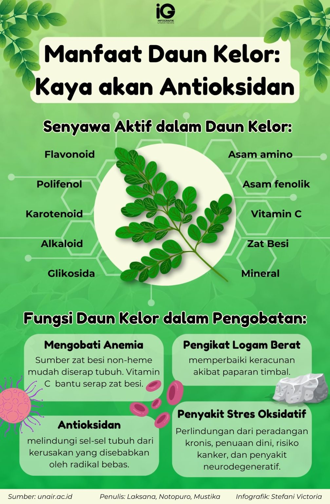

Kenapa Banyak Orang Mengandalkan Daun Kelor Setiap Hari?
Praktis, alami, dan mendukung rutinitas sehat Anda tanpa ribet.
Manfaat Umum yang Banyak Dicari

- Praktis dikonsumsi setiap hari
- Sumber nutrisi alami
- Kaya antioksidan alami
- Mendukung gaya hidup sehat
Kelebihan Produk Kami
- Dibuat oleh tim profesional di Indonesia
- 100% daun kelor asli tanpa bahan tambahan sintetis
- Proses pengolahan higienis & terstandar
- Kemasan berkualitas & aman
Detail Produk
Komposisi: 100% daun kelor bubuk
Isi Bersih: 100 gram
Cara Konsumsi: 1–2 sendok teh per hari
Produk ini bukan obat dan tidak ditujukan untuk mendiagnosis, mengobati, atau mencegah penyakit.
Apa Kata Pengguna?
“Ringan diminum pagi hari, nyaman.” — R
“Kualitasnya bagus, kemasan rapi.” — A
“Cocok untuk rutinitas sehat harian.” — M
Siap Coba Hari Ini?